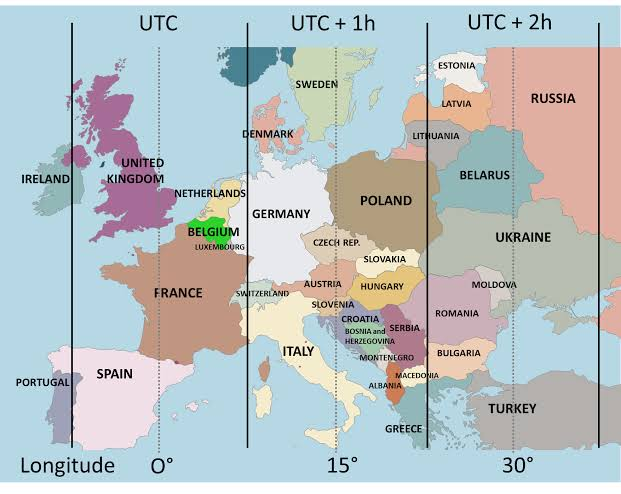
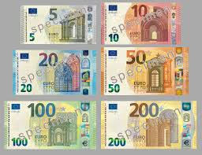
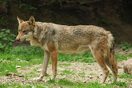
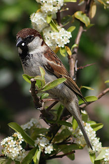
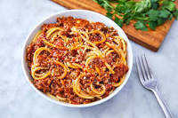

Location-
 Italy is part of the Northern Hemisphere. Italy is located in southern Europe and comprises the long, boot-shaped Italian Peninsula, the southern side of Alps, the large plain of the Po Valley and some islands including Sicily and Sardinia. Corsica, although belonging to the Italian geographical region, has been a part of France since 1769.
Time Zone-
UTC+1
Capital-
 Rome
RomeRome is the capital city of Italy. It is the centre of the Metropolitan City of Rome, which has a population of 4,355,725 residents, thus making it the most populous metropolitan city in Italy. The Vatican City (the smallest country in the world) is an independent country inside the city boundaries of Rome, the only existing example of a country within a city: for this reason Rome has been often defined as capital of two states.
 Currency-
Euro
The euro (sign: �; code: EUR) is the official currency of 19 of the 28 member states of the European Union. This group of states is known as the eurozone or euro area, and counts about 343 million citizens as of 2019. The euro, which is divided into 100 cents, is the second-largest and second-most traded currency in the foreign exchange market after the United States dollar.
Official language-
Italian
National anthem-
Il Canto degli Italiani
 National animal-
Grey wolf
The Italian wolf also known as the Apennine wolf, is a proposed subspecies of grey wolf native to the Italian Peninsula. It has been strictly protected in Italy since the 1970s, when the population reached a low of 70�100 individuals. A 2016 survey showed that probably between 1,269 and 1,800 wolves remained in Italy. The Italian wolf typically weighs 25�35 kg (55�77 lb), though some large males have been weighed at 40�45 kg (88�99 lb). It measures 110�148 cm in body length and 50�70 cm in shoulder height.
 National bird-
Italian sparrow
The Italian sparrow (Passer italiae), also known as the cisalpine sparrow, is a passerine bird of the sparrow family Passeridae, found in Italy and other parts of the Mediterranean region. The Italian sparrow occurs in northern Italy and neighbouring regions, with intermediates with the house sparrow in a very narrow contact zone in the Alps, a slow gradation in appearance from the Italian to Spanish sparrows across central and southern Italy, and more birds of intermediate appearance in Malta, Crete, and other parts of the Mediterranean. The Italian sparrow is a small chunky bird, with grey and brown plumage.
National flower-
Lily
Lilium (members of which are true lilies) is a genus of herbaceous flowering plants growing from bulbs, all with large prominent flowers. Lilies are a group of flowering plants which are important in culture and literature in much of the world. Most species are native to the temperate northern hemisphere, though their range extends into the northern subtropics.
 National dish-
Ragu Alla Bolognese
People in US associate Rag� with a brand of jarred sauces owned by a Japanese company, and Bolognese with a meat sauce that�s served with Spaghetti, but in Bologna where Rag� Alla Bolognese is thought to originate, it�s a local meat sauce that�s almost always served with tagliatelle. If you think about it, it makes a lot of sense, as the flat noodles are much more adept at hanging onto the tender bits of minced meat in their loops and folds than slick, cylindrical spaghetti